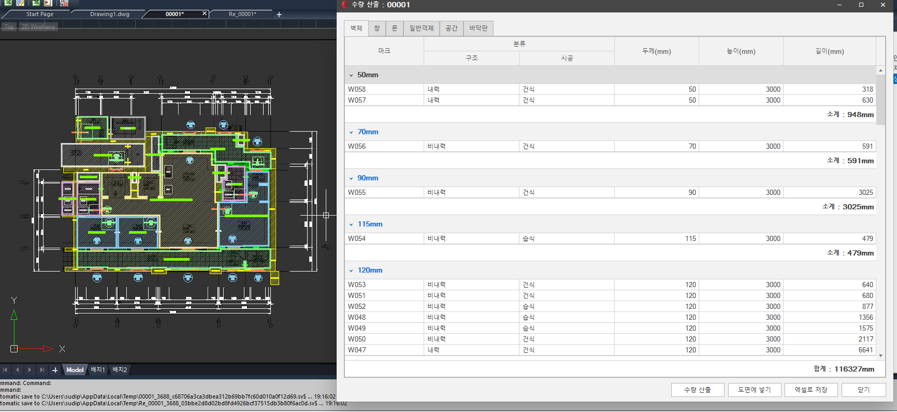
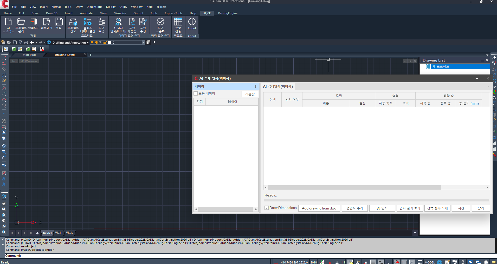
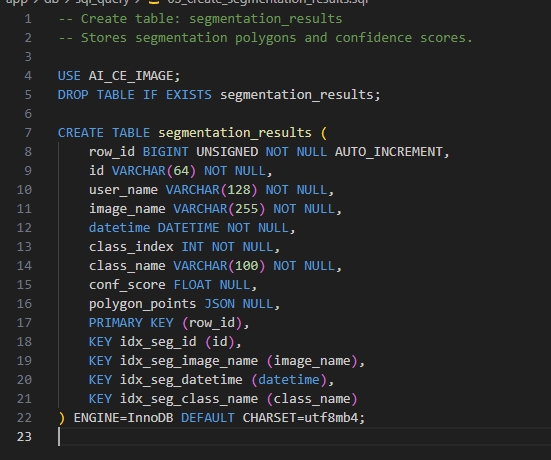
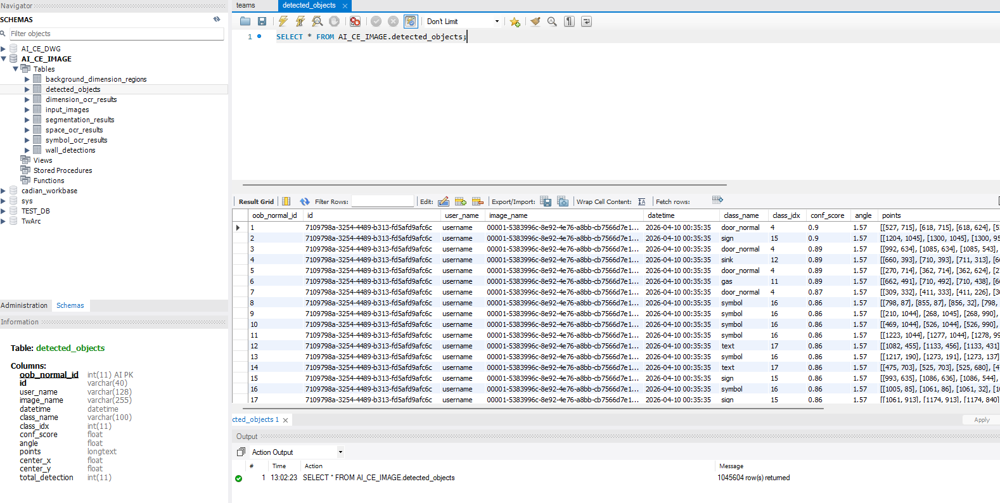
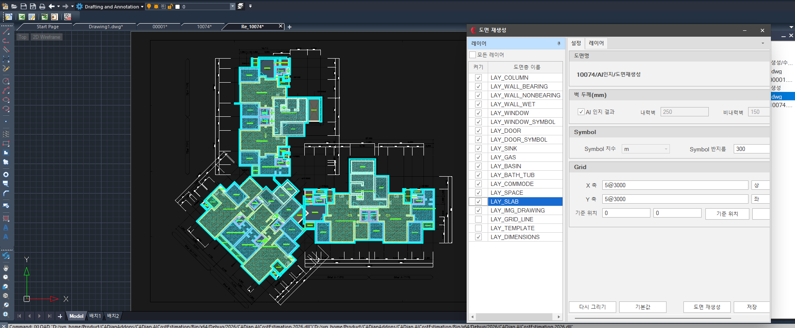
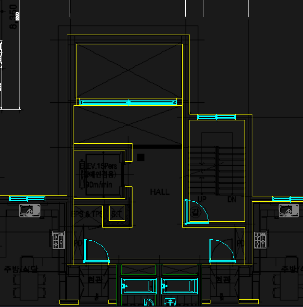
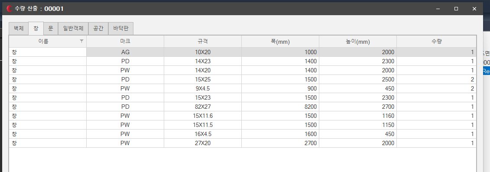
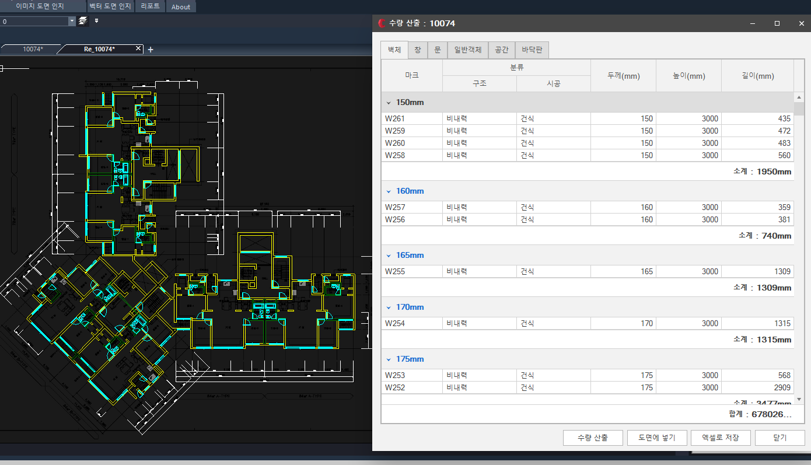

AX Raster2BOM - From Floor-Plan Images to Quantitative Analysis
An add-in for a CAD application that reads a floor-plan image, recognizes what is drawn on it, rebuilds it as CAD layers, and produces a quantity take-off that an estimator can review.
Main Goal of the Project


Main Process

1. Introduction
Cost estimation starts from drawings, and many of those drawings arrive as images rather than as CAD files. A person has to read every wall, window, door and room, measure them, and type the quantities into a sheet. That takes days on a large plan and the numbers are easy to get wrong.
This project does that reading automatically. The picture below is the whole system: a user sends a floor-plan image from the CAD add-in to one of three deployments, an on-premises Linux server, an AWS instance, or an ONNX CPU build on their own PC. Each one runs the same AI engine, the detection, segmentation and OCR models plus the rules that turn their output into quantities. Every result is kept in a database, and three outputs come back.
flowchart LR
U[User
CAD add-in]:::input --> P1[On-premises
Linux GPU server]:::agent
U --> P2[AWS
GPU instance]:::agent
U --> P3[Own PC
ONNX CPU]:::agent
P1 --> E1[AI engine
Detection · Segmentation · OCR
+ rules]:::process
P2 --> E2[AI engine
Detection · Segmentation · OCR
+ rules]:::process
P3 --> E3[AI engine
Detection · Segmentation · OCR
+ rules]:::process
E1 --> R[(Structured result)]:::store
E2 --> R
E3 --> R
R --> DB[(MySQL
results database)]:::store
R --> O1[CAD layers]:::output
R --> O2[Quantity tables
Excel]:::output
R --> O3[JSON]:::output
2. Input and preprocessing
A drawing is added to a project inside the CAD application, either one at a time or as a batch. Before any model runs, each image is validated, rescaled and cleaned, which is what keeps small dimension text and thin wall lines readable at model resolution.

What preprocessing has to solve
- Scale varies. Every drawing is exported at a different size, so results must not depend on the pixel size of the input.
- Small text. Dimensions and room labels are tiny next to the walls, and naive downscaling destroys them.
- Noise. Scans and exports carry speckle, compression artefacts and hatching that confuse edges.
- Large sheets. A block plan does not fit in one pass and has to be processed in parts and reassembled.
3. Models
Three model branches run over the prepared image. Each one recovers a different kind of information, writes its rows into its own database table, and the three are merged into one structured result.
| Model | What it recovers | Framework |
|---|---|---|
| Detection and classification | windows, doors, fixtures, columns and their type | PyTorch |
| Segmentation | rooms, slabs and wall regions, plus wall thickness | PyTorch |
| OCR | dimension text, opening marks and room names | CRNN and Paddle OCR |
3.1 Detection branch
Finds every object on the plan and names its type. Each hit is stored with its class, confidence, angle and corner points.
flowchart LR
A[Prepared image]:::input --> M[Detection model
PyTorch]:::process
M --> W[Objects and classes
windows, doors, fixtures, columns]:::agent
W --> T[(detected_objects)]:::store
3.2 Segmentation branch
Recovers regions rather than boxes: rooms, slabs and wall areas, and from the wall areas their thickness. Each region is stored as a polygon.
flowchart LR
A[Prepared image]:::input --> M[Segmentation model
PyTorch]:::process
M --> W[Regions and walls
rooms, slabs, wall thickness]:::agent
W --> T[(segmentation_results)]:::store
3.3 OCR branch
Reads the text on the plan: dimension strings, opening marks and room names, each kept in its own table so it can be matched back to the object it labels.
flowchart LR
A[Prepared image]:::input --> M[OCR
CRNN · Paddle OCR]:::process
M --> W[Dimensions, marks, labels]:::agent
W --> T[(dimension_ocr_results
symbol_ocr_results
space_ocr_results)]:::store
The OCR recognizer is a CRNN: a convolutional stack reads the cropped text, a bidirectional sequence layer reads it left to right, and a CTC head turns that into characters. The diagram below is illustrative and does not expose the deployed configuration.
flowchart TB
A[Text crop
1 x 32 x 128]:::input --> B[Convolution + ReLU
32 to 64 to 128 channels]:::process
B --> C[Height aggregation
32 time steps]:::process
C --> D[Bidirectional sequence
256 features]:::process
D --> E[Character projection
K class scores]:::process
E --> F[CTC decoding]:::agent
F --> G[Decoded text
dimensions, marks, labels]:::output
4. Results database
Every recognized item is stored in a MySQL database, one table per kind of result, and all of them keyed by the input image. A row carries who ran it, which image, when, the class, the confidence and the geometry, so a result can be re-opened, compared or audited later.



5. Recognition results
Recognized items are written back into the drawing as named layers, so walls, openings, fixtures and spaces can each be shown or hidden. Wall thickness recovered by the model fills the bearing and non-bearing values used when the drawing is rebuilt.



6. Final output
From the recognized drawing the add-in produces quantity tables, grouped by type and by size, with a subtotal per group and a total per sheet. Walls, windows, doors, general objects, spaces and slabs each get their own tab, and the whole table exports to Excel.



7. Serving and operations
The models never run inside the CAD add-in. The add-in sends a drawing over HTTP and receives a structured result, and that service is deployed in three ways: on an on-premises Linux GPU server, on AWS, or as an ONNX CPU build for users who want the product on their own PC without a remote connection. The code below is shortened to show the shape of each part, not the production source.
7.1 On-premises Linux server
The main deployment. A FastAPI service receives the drawing over an HTTP connection from the CADian UI, puts the job on a Redis queue, and a Celery worker runs the three model branches on the GPU. The add-in polls for the result and draws it. Redis manages the traffic, so a burst of drawings queues up instead of overloading the GPU, and Celery handles the heavy backend work outside the request cycle.
flowchart LR
C[CADian UI
HTTP client]:::input --> N[nginx
reverse proxy]:::process
N --> API[FastAPI
accepts the drawing]:::agent
API --> Q[(Redis
job queue and state)]:::store
Q --> W[Celery worker
PyTorch on GPU]:::agent
W --> DB[(MySQL
results)]:::store
W --> OUT[Result JSON
drawn in CADian]:::output
GW[GPU watchdog timer]:::note -.-> SD[systemctl
restart on failure]:::tool
SD -.-> API
SD -.-> W
The API stays small: it validates the upload, enqueues the work and answers polls. Everything slow happens in the worker.
# app/main.py: the API only accepts the drawing and hands it to a worker.
from fastapi import FastAPI, UploadFile
from celery import Celery
app = FastAPI()
queue = Celery("ax", broker="redis://127.0.0.1:6379/0", backend="redis://127.0.0.1:6379/1")
@app.post("/recognize")
async def recognize(drawing: UploadFile, scale: float):
path = save_upload(drawing) # validated and rescaled on disk
job = queue.send_task("ax.recognize", args=[path, scale])
return {"job_id": job.id} # the add-in polls this id
@app.get("/result/{job_id}")
def result(job_id: str):
job = queue.AsyncResult(job_id)
return {"state": job.state, "result": job.result if job.ready() else None}
# worker/tasks.py: one Celery worker per GPU runs the three model branches.
@queue.task(name="ax.recognize")
def recognize(path, scale):
image = preprocess(path, scale)
result = merge(detect(image), segment(image), read_text(image))
store(result) # one MySQL table per branch
return result.to_json()
Both processes are systemd services, so the server never stays down: if the API or the worker exits, systemctl restarts it within seconds, and both start again after a reboot.
# /etc/systemd/system/ax-inference.service (ax-worker.service is the same shape, running celery)
[Unit]
Description=AX Raster2BOM inference API
After=network.target redis.service
[Service]
User=ax
WorkingDirectory=/opt/ax-inference
ExecStart=/opt/ax-inference/.venv/bin/uvicorn app.main:app --host 127.0.0.1 --port 8000
Restart=always
RestartSec=5
[Install]
WantedBy=multi-user.target
One failure mode needed its own guard: after some inferences the GPU stayed at 100% even though no job was running. A systemd timer runs a small watchdog every minute; if the GPU is pinned while the queue is idle, it restarts the services and the GPU is released.
#!/usr/bin/env bash
# gpu-watchdog.sh: run by a systemd timer every minute.
util=$(nvidia-smi --query-gpu=utilization.gpu --format=csv,noheader,nounits | head -n1)
active=$(redis-cli llen ax:jobs:active)
if [ "$util" -ge 100 ] && [ "$active" -eq 0 ]; then
systemctl restart ax-worker ax-inference
fi
7.2 AWS deployment
The same service runs on AWS when a customer cannot host a GPU machine. The API and worker are installed on a GPU EC2 instance exactly as above, and the model weights live in an S3 bucket, one prefix per approved version. The instance reads the bucket through its instance role, so no keys are stored on the machine; on start the service pulls the version it is told to use, and rolling to a new model is a change of one variable and a restart. nginx terminates TLS and the security group only admits the CADian clients.
flowchart LR
C[CADian UI]:::input --> N[nginx · TLS
EC2 security group]:::process
N --> API[FastAPI + Celery
EC2 GPU instance]:::agent
S3[(S3 bucket
model versions)]:::store --> API
IAM[Instance role
read-only S3]:::tool -.-> API
API --> RDS[(Redis)]:::store
API --> DB[(MySQL)]:::store
API --> OUT[Result JSON
to the add-in]:::output
# model_store.py: pull the approved model version from S3 when the service starts.
import boto3, os
BUCKET = "ax-raster2bom-models"
PREFIX = os.environ["MODEL_VERSION"] # e.g. "2026-03/"
s3 = boto3.client("s3")
def pull_models(dest="/opt/ax-inference/models"):
for obj in s3.list_objects_v2(Bucket=BUCKET, Prefix=PREFIX)["Contents"]:
target = os.path.join(dest, os.path.basename(obj["Key"]))
if not os.path.exists(target):
s3.download_file(BUCKET, obj["Key"], target)
# Publish a new model version, then roll the server to it.
aws s3 sync ./export/2026-03 s3://ax-raster2bom-models/2026-03/
ssh ax-aws 'sudo systemctl set-environment MODEL_VERSION=2026-03/ \
&& sudo systemctl restart ax-inference ax-worker'
7.3 ONNX CPU deployment on the user's PC
Some users want the product on their own machine with no remote connection. For them the PyTorch models are exported to ONNX and run under ONNX Runtime on the CPU, inside the add-in's own process: no server, no GPU and no network. It is slower than the GPU service, but the drawing never leaves the PC.
flowchart LR
U[User PC
CADian add-in]:::input --> RT[ONNX Runtime
CPU session]:::agent
M[(ONNX models
shipped with the add-in)]:::store --> RT
RT --> R[Structured result]:::process
R --> L[CAD layers and
quantity tables]:::output
# export_onnx.py: one PyTorch model -> one .onnx file, with a dynamic batch and image size.
import torch
model = load_detector("weights/detector.pt").eval()
dummy = torch.zeros(1, 3, 1024, 1024)
torch.onnx.export(
model, dummy, "export/detector.onnx",
opset_version=17,
input_names=["image"], output_names=["boxes", "scores", "classes"],
dynamic_axes={"image": {0: "batch", 2: "height", 3: "width"}},
)
# infer_onnx.py: the same model on the user's CPU, with no PyTorch and no server.
import numpy as np
import onnxruntime as ort
session = ort.InferenceSession("models/detector.onnx", providers=["CPUExecutionProvider"])
image = preprocess(path).astype(np.float32)[None] # 1 x 3 x H x W
boxes, scores, classes = session.run(None, {"image": image})
| Component | Role |
|---|---|
| FastAPI | request validation, job submission, result polling |
| Celery | runs the model branches in a worker, outside the request cycle |
| Redis | job queue, traffic control, request outcomes and event history |
| systemd | supervises the API and worker, restarts them, runs the GPU watchdog timer |
| nginx | reverse proxy and TLS in front of the service |
| MySQL | results: detections, segmentations and OCR rows per input image |
| Amazon S3 | versioned model weights for the AWS deployment |
| ONNX Runtime | CPU build of the models for the user's own PC |
8. Monitoring
A long-running service needs its health to be visible, so request volume, failures, queue usage, database writes, file transfers and GPU memory are all exported as metrics and shown on a dashboard. Prometheus scrapes the service and Grafana reads it, alongside a custom operator dashboard.

9. Summary
The system turns a floor-plan image into a reviewable quantity take-off. Detection, segmentation and OCR models recover objects, regions and text, the result is written back into the drawing as CAD layers, and quantities are grouped into tables that export to Excel. Every result is kept in MySQL. The models run behind a supervised FastAPI service with Redis-backed state, on-premises or on AWS and on GPU or ONNX CPU, and its request, database and host metrics are visible on a live dashboard.
Public project overview. Infrastructure values are illustrative. Model workflows describe engineering responsibilities without exposing proprietary processing logic.
AX Raster2BOM - 평면도 이미지에서 수량 산출까지
CAD 프로그램의 애드인이에요. 평면도 이미지를 읽고, 그 안에 그려진 것을 인식하고, CAD Layer로 다시 그리고, 견적 담당자가 검토할 수 있는 수량 산출표를 만들어요.
프로젝트의 목표
주요 과정
1. 소개
견적은 도면에서 시작해요. 그런데 많은 도면이 CAD 파일이 아니라 이미지로 와요. 사람이 벽, 창, 문, 방을 하나하나 읽고, 재고, 표에 입력해야 해요. 큰 도면은 며칠이 걸리고, 숫자도 틀리기 쉬워요.
이 프로젝트는 그 일을 자동으로 해요. 아래 그림이 전체 시스템이에요. 사용자가 CAD 애드인에서 평면도 이미지를 보내면, 온프레미스 Linux 서버, AWS 인스턴스, 또는 자기 PC의 ONNX CPU 버전 중 하나가 받아요. 셋 다 같은 AI 엔진을 실행해요. Detection, Segmentation, OCR 모델과 그 결과를 수량으로 바꾸는 규칙이에요. 모든 결과는 데이터베이스에 저장되고, 세 가지 출력이 돌아와요.
flowchart LR
U[사용자
CAD 애드인]:::input --> P1[온프레미스
Linux GPU 서버]:::agent
U --> P2[AWS
GPU 인스턴스]:::agent
U --> P3[사용자 PC
ONNX CPU]:::agent
P1 --> E1[AI 엔진
Detection · Segmentation · OCR
+ 규칙]:::process
P2 --> E2[AI 엔진
Detection · Segmentation · OCR
+ 규칙]:::process
P3 --> E3[AI 엔진
Detection · Segmentation · OCR
+ 규칙]:::process
E1 --> R[(구조화된 결과)]:::store
E2 --> R
E3 --> R
R --> DB[(MySQL
결과 데이터베이스)]:::store
R --> O1[CAD Layer]:::output
R --> O2[수량표
Excel]:::output
R --> O3[JSON]:::output
2. 입력과 전처리
CAD 프로그램 안에서 도면을 프로젝트에 추가해요. 한 장씩도 되고, 여러 장을 한 번에 넣을 수도 있어요. 모델을 돌리기 전에 이미지를 검사하고, 크기를 맞추고, 노이즈를 지워요. 그래야 작은 치수 글자와 얇은 벽선이 모델 해상도에서도 읽혀요.
전처리가 해결해야 하는 것
- 축척이 다 달라요. 도면마다 다른 크기로 내보내지기 때문에, 결과가 입력의 픽셀 크기에 따라 달라지면 안 돼요.
- 글자가 작아요. 치수와 방 이름은 벽에 비해 아주 작아서, 그냥 줄이면 사라져요.
- 노이즈. 스캔과 내보내기 과정에서 점, 압축 자국, 해치가 섞여 들어와 선을 헷갈리게 해요.
- 큰 도면. 동 전체 평면은 한 번에 들어가지 않아서, 나눠서 처리하고 다시 합쳐요.
3. 모델
준비된 이미지 위에서 세 가지 모델이 돌아가요. 각각 다른 정보를 찾고, 자기 데이터베이스 테이블에 저장하고, 마지막에 하나의 구조화된 결과로 합쳐져요.
| 모델 | 찾는 것 | Framework |
|---|---|---|
| Detection과 분류 | 창, 문, 기구, 기둥과 그 종류 | PyTorch |
| Segmentation | 방, 슬래브, 벽 영역과 벽 두께 | PyTorch |
| OCR | 치수 글자, 개구부 Mark, 방 이름 | CRNN, Paddle OCR |
3.1 Detection
도면 위의 객체를 찾고 종류를 정해요. 결과는 class, confidence, 각도, 꼭짓점과 함께 저장돼요.
flowchart LR
A[준비된 이미지]:::input --> M[Detection 모델
PyTorch]:::process
M --> W[객체와 종류
창, 문, 기구, 기둥]:::agent
W --> T[(detected_objects)]:::store
3.2 Segmentation
박스가 아니라 영역을 찾아요. 방, 슬래브, 벽 영역을 찾고, 벽 영역에서 벽 두께를 구해요. 각 영역은 polygon으로 저장돼요.
flowchart LR
A[준비된 이미지]:::input --> M[Segmentation 모델
PyTorch]:::process
M --> W[영역과 벽
방, 슬래브, 벽 두께]:::agent
W --> T[(segmentation_results)]:::store
3.3 OCR
도면의 글자를 읽어요. 치수, 개구부 Mark, 방 이름이에요. 각각 자기 테이블에 저장해서, 나중에 그 글자가 가리키는 객체와 맞출 수 있어요.
flowchart LR
A[준비된 이미지]:::input --> M[OCR
CRNN · Paddle OCR]:::process
M --> W[치수, Mark, 이름]:::agent
W --> T[(dimension_ocr_results
symbol_ocr_results
space_ocr_results)]:::store
OCR 인식기는 CRNN이에요. Convolution이 잘라낸 글자 이미지를 읽고, 양방향 sequence 층이 왼쪽에서 오른쪽으로 읽고, CTC가 그것을 글자로 바꿔요. 아래 그림은 설명용이고, 실제 배포 설정은 아니에요.
flowchart TB
A[글자 조각
1 x 32 x 128]:::input --> B[Convolution + ReLU
32 → 64 → 128 채널]:::process
B --> C[높이 방향 합치기
32 time steps]:::process
C --> D[양방향 sequence
256 features]:::process
D --> E[글자 점수
K class scores]:::process
E --> F[CTC decoding]:::agent
F --> G[읽은 글자
치수, Mark, 이름]:::output
4. 결과 데이터베이스
인식된 모든 항목은 MySQL에 저장돼요. 결과 종류마다 테이블이 하나씩 있고, 전부 입력 이미지에 연결돼요. 한 행에는 누가, 어떤 이미지를, 언제 돌렸는지와 class, confidence, geometry가 들어 있어서 나중에 다시 열어 보고, 비교하고, 검토할 수 있어요.
5. 인식 결과
인식된 항목은 이름이 있는 Layer로 도면에 다시 그려져요. 그래서 벽, 개구부, 기구, 공간을 따로 켜고 끌 수 있어요. 모델이 구한 벽 두께는 도면을 다시 그릴 때 내력벽과 비내력벽 값으로 들어가요.
6. 최종 출력
인식된 도면에서 애드인이 수량표를 만들어요. 종류와 크기별로 묶고, 그룹별 소계와 도면별 합계가 있어요. 벽, 창, 문, 일반 객체, 공간, 슬래브가 각각 탭이고, 전체 표를 Excel로 내보낼 수 있어요.
7. 서빙과 운영
모델은 CAD 애드인 안에서 돌지 않아요. 애드인이 HTTP로 도면을 보내고 구조화된 결과를 받아요. 이 서비스는 세 가지 방식으로 배포돼요. 온프레미스 Linux GPU 서버, AWS, 그리고 원격 연결 없이 자기 PC에서 쓰고 싶은 사용자를 위한 ONNX CPU 버전이에요. 아래 코드는 각 부분의 모양을 보여 주려고 줄인 것이고, 실제 소스는 아니에요.
7.1 온프레미스 Linux 서버
기본 배포예요. FastAPI 서비스가 CADian UI에서 HTTP로 도면을 받고, Redis 큐에 작업을 넣고, Celery worker가 GPU에서 세 모델을 돌려요. 애드인은 결과를 polling해서 도면에 그려요. Redis가 트래픽을 관리해서 도면이 한꺼번에 몰려도 GPU에 다 올라가지 않고 줄을 서요. Celery는 무거운 백엔드 작업을 요청 밖에서 처리해요.
flowchart LR
C[CADian UI
HTTP 클라이언트]:::input --> N[nginx
Reverse proxy]:::process
N --> API[FastAPI
도면 접수]:::agent
API --> Q[(Redis
작업 큐와 상태)]:::store
Q --> W[Celery worker
GPU의 PyTorch]:::agent
W --> DB[(MySQL
결과)]:::store
W --> OUT[결과 JSON
CADian에 표시]:::output
GW[GPU 감시 타이머]:::note -.-> SD[systemctl
실패 시 재시작]:::tool
SD -.-> API
SD -.-> W
API는 작게 유지해요. 업로드를 검사하고, 작업을 큐에 넣고, polling에 답해요. 느린 일은 전부 worker에서 해요.
# app/main.py: the API only accepts the drawing and hands it to a worker.
from fastapi import FastAPI, UploadFile
from celery import Celery
app = FastAPI()
queue = Celery("ax", broker="redis://127.0.0.1:6379/0", backend="redis://127.0.0.1:6379/1")
@app.post("/recognize")
async def recognize(drawing: UploadFile, scale: float):
path = save_upload(drawing) # validated and rescaled on disk
job = queue.send_task("ax.recognize", args=[path, scale])
return {"job_id": job.id} # the add-in polls this id
@app.get("/result/{job_id}")
def result(job_id: str):
job = queue.AsyncResult(job_id)
return {"state": job.state, "result": job.result if job.ready() else None}
# worker/tasks.py: one Celery worker per GPU runs the three model branches.
@queue.task(name="ax.recognize")
def recognize(path, scale):
image = preprocess(path, scale)
result = merge(detect(image), segment(image), read_text(image))
store(result) # one MySQL table per branch
return result.to_json()
두 프로세스 모두 systemd 서비스라서 서버가 멈춘 채로 있지 않아요. API나 worker가 죽으면 systemctl이 몇 초 안에 다시 올리고, 재부팅 뒤에도 다시 시작돼요.
# /etc/systemd/system/ax-inference.service (ax-worker.service is the same shape, running celery)
[Unit]
Description=AX Raster2BOM inference API
After=network.target redis.service
[Service]
User=ax
WorkingDirectory=/opt/ax-inference
ExecStart=/opt/ax-inference/.venv/bin/uvicorn app.main:app --host 127.0.0.1 --port 8000
Restart=always
RestartSec=5
[Install]
WantedBy=multi-user.target
따로 막아야 했던 문제가 하나 있었어요. 추론이 끝났는데도 GPU 사용률이 100%에 머무는 경우예요. systemd 타이머가 1분마다 작은 감시 스크립트를 돌려요. 큐가 비어 있는데 GPU가 100%면 서비스를 재시작하고, 그러면 GPU가 풀려요.
#!/usr/bin/env bash
# gpu-watchdog.sh: run by a systemd timer every minute.
util=$(nvidia-smi --query-gpu=utilization.gpu --format=csv,noheader,nounits | head -n1)
active=$(redis-cli llen ax:jobs:active)
if [ "$util" -ge 100 ] && [ "$active" -eq 0 ]; then
systemctl restart ax-worker ax-inference
fi
7.2 AWS 배포
고객이 GPU 서버를 둘 수 없을 때는 같은 서비스를 AWS에서 돌려요. API와 worker는 GPU EC2 인스턴스에 위와 똑같이 설치하고, 모델 가중치는 S3 버킷에 승인된 버전별로 둬요. 인스턴스는 instance role로 버킷을 읽어서 서버에 키를 저장하지 않아요. 시작할 때 지정된 버전을 내려받고, 새 모델로 바꾸는 건 변수 하나 바꾸고 재시작하면 돼요. nginx가 TLS를 처리하고, security group은 CADian 클라이언트만 허용해요.
flowchart LR
C[CADian UI]:::input --> N[nginx · TLS
EC2 security group]:::process
N --> API[FastAPI + Celery
EC2 GPU 인스턴스]:::agent
S3[(S3 버킷
모델 버전)]:::store --> API
IAM[Instance role
S3 읽기 전용]:::tool -.-> API
API --> RDS[(Redis)]:::store
API --> DB[(MySQL)]:::store
API --> OUT[결과 JSON
애드인으로]:::output
# model_store.py: pull the approved model version from S3 when the service starts.
import boto3, os
BUCKET = "ax-raster2bom-models"
PREFIX = os.environ["MODEL_VERSION"] # e.g. "2026-03/"
s3 = boto3.client("s3")
def pull_models(dest="/opt/ax-inference/models"):
for obj in s3.list_objects_v2(Bucket=BUCKET, Prefix=PREFIX)["Contents"]:
target = os.path.join(dest, os.path.basename(obj["Key"]))
if not os.path.exists(target):
s3.download_file(BUCKET, obj["Key"], target)
# Publish a new model version, then roll the server to it.
aws s3 sync ./export/2026-03 s3://ax-raster2bom-models/2026-03/
ssh ax-aws 'sudo systemctl set-environment MODEL_VERSION=2026-03/ \
&& sudo systemctl restart ax-inference ax-worker'
7.3 사용자 PC의 ONNX CPU 배포
원격 연결 없이 자기 컴퓨터에서 쓰고 싶은 사용자도 있어요. 이 경우 PyTorch 모델을 ONNX로 내보내고, 애드인 프로세스 안에서 ONNX Runtime이 CPU로 돌려요. 서버도, GPU도, 네트워크도 없어요. GPU 서비스보다 느리지만 도면이 PC 밖으로 나가지 않아요.
flowchart LR
U[사용자 PC
CADian 애드인]:::input --> RT[ONNX Runtime
CPU session]:::agent
M[(ONNX 모델
애드인에 포함)]:::store --> RT
RT --> R[구조화된 결과]:::process
R --> L[CAD Layer와
수량표]:::output
# export_onnx.py: one PyTorch model -> one .onnx file, with a dynamic batch and image size.
import torch
model = load_detector("weights/detector.pt").eval()
dummy = torch.zeros(1, 3, 1024, 1024)
torch.onnx.export(
model, dummy, "export/detector.onnx",
opset_version=17,
input_names=["image"], output_names=["boxes", "scores", "classes"],
dynamic_axes={"image": {0: "batch", 2: "height", 3: "width"}},
)
# infer_onnx.py: the same model on the user's CPU, with no PyTorch and no server.
import numpy as np
import onnxruntime as ort
session = ort.InferenceSession("models/detector.onnx", providers=["CPUExecutionProvider"])
image = preprocess(path).astype(np.float32)[None] # 1 x 3 x H x W
boxes, scores, classes = session.run(None, {"image": image})
| 구성 요소 | 역할 |
|---|---|
| FastAPI | 요청 검사, 작업 제출, 결과 polling |
| Celery | 요청 밖의 worker에서 모델을 실행 |
| Redis | 작업 큐, 트래픽 관리, 요청 결과와 이벤트 기록 |
| systemd | API와 worker를 관리하고 재시작, GPU 감시 타이머 실행 |
| nginx | 서비스 앞의 Reverse proxy와 TLS |
| MySQL | 결과: 입력 이미지별 Detection, Segmentation, OCR 행 |
| Amazon S3 | AWS 배포용 모델 가중치, 버전별 보관 |
| ONNX Runtime | 사용자 PC용 CPU 모델 실행 |
8. 모니터링
오래 도는 서비스는 상태가 보여야 해요. 요청 수, 실패, 큐 사용량, DB 쓰기, 파일 전송, GPU 메모리를 전부 지표로 내보내고 대시보드에 보여 줘요. Prometheus가 서비스에서 지표를 수집하고 Grafana가 읽어요. 별도의 운영자 대시보드도 있어요.
9. 요약
이 시스템은 평면도 이미지를 검토 가능한 수량 산출표로 바꿔요. Detection, Segmentation, OCR 모델이 객체, 영역, 글자를 찾고, 결과는 CAD Layer로 도면에 다시 그려지고, 수량은 표로 묶여 Excel로 나가요. 모든 결과는 MySQL에 저장돼요. 모델은 systemd가 관리하는 FastAPI 서비스 뒤에서 돌고, 상태는 Redis에 있고, 온프레미스나 AWS에서 GPU로 또는 ONNX CPU로 실행돼요. 요청, DB, 호스트 지표는 실시간 대시보드에서 볼 수 있어요.
공개용 프로젝트 소개예요. 인프라 값은 예시이고, 모델 워크플로는 독점 처리 로직을 드러내지 않는 선에서 담당 업무를 설명해요.